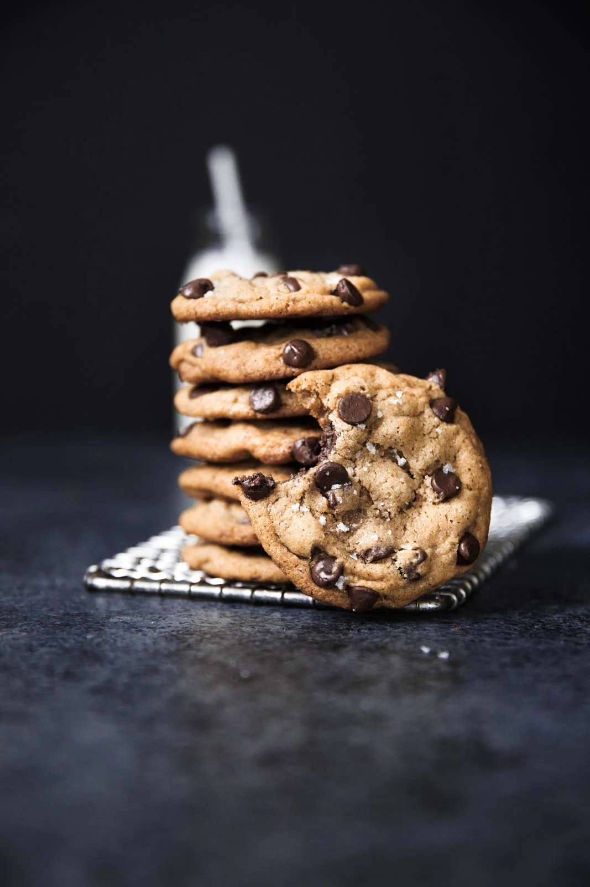

Decadent Chocolate-chip Cookies

Intro
The all American classic. This recipe incorporates brown butter into the batter to add just an extra layer of complexity, richness, and slight nuttiness to an already great dessert.
Ingredients
- 1 Cup Unsalted Butter
- 2 1/2 cups All-Purpose Flour
- 1 tsp Baking Soda
- 1 tsp fine Sea Salt
- 1/2 tsp ground Cinnamon
- 1 Cup Light Brown Sugar
- 1/4 Cup Granulated Sugar
- 1 Large Egg & 1 Egg Yolk (at room temperature)
- 2 tsp Vanilla Extract
- 12 oz roughly chopped Semi-Sweet Chocolate(or 12 oz Chocolate Chips)
Directions
- In a medium saucepan melt your butter, stirring until it starts to turn golden brown then set aside in a bowl to cool.
- In a medium bowl whisk together your flour, baking soda and cinnamon.
- Add the sugar to your brown butter, stir to combine then add your egg, egg yolk, and vanilla extract stirring until smooth before combining with your flour mixture.
- Stir in your chopped chocolate(or chocolate chips) to combine and line out a baking sheet with parchment paper.
- Place 1/4 cup scoop of your dough formed into a ball over your lined baking sheet and let rest in a chilled environment for 1hr to 24hrs.
- When done resting preheat your oven to 350 degrees fahrenheit to bake for 15 minutes, rotating halfway through.
- When the edges of the cookies are just starting to turn golden remove from the oven and let them rest and continue cooking on the baking sheet for 5 minutes before moving to a cooling rack.
- If stored in an airtight container cookies will store for 3 days once finished.